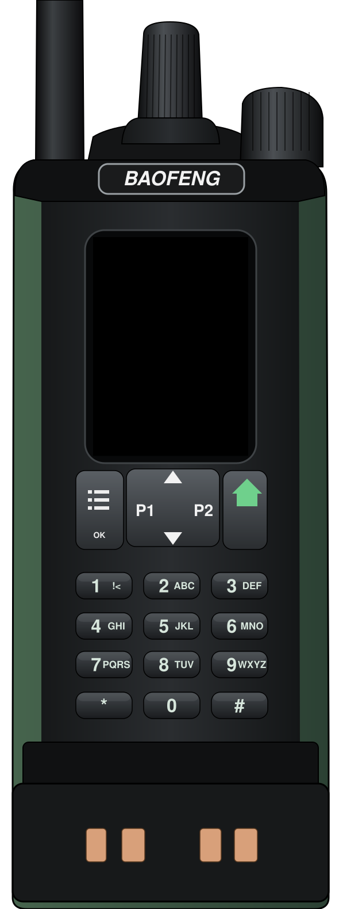

Baofeng DM-32UV
已支持
FM and DMR voice both ways, CTCSS/DCS, APRS both ways, GPS data, the hotspot and each split duplex half work on air. Open: FM deviation at 12.5 kHz and an outdoor GPS fix.
- 也以这些型号销售
- —
- 类型
- 手持
- 频段
- 136-174 / 400-480 MHz · 航空波段 AM 108-137 MHz · 调频广播 87-108 MHz
- 功率
- 1 / 5 W
- 处理器
- HR_C7000
- 屏幕
- color, 240 × 320
- 电压显示
- 电池
- 关机后保持时钟
- 是（备用电池）
屏幕
功能
| 功能 | 完整 | 业余 | 商用 |
|---|---|---|---|
| 网络（USB 网卡与 DMR 承载 IP） | |||
从网页退出网络模式USB_SERIAL_REQUEST | 未包含 | 未包含 | 未包含 |
DMR 承载 IP 网关DMR_IP_GATEWAY | 已包含 | 已包含 | 已包含 |
最小 TCPNET_TCP | 已包含 | 已包含 | 已包含 |
TCP 上的 KISS，端口 8001NET_KISS | 已包含 | 已包含 | 未包含 |
HTTP 状态页与 JSON，端口 80NET_HTTP | 已包含 | 已包含 | 已包含 |
HTTP 静态文件以 gzip 存储并提供NET_HTTP_GZIP | 已包含 | 已包含 | 已包含 |
Web 控制：前面板页面、按键、状态和接收音频（/ws）NET_WEBCTL | 已包含 | 已包含 | 已包含 |
rigctld，端口 4532NET_RIGCTL | 已包含 | 已包含 | 已包含 |
APRS-IS 客户端NET_APRSIS | 已包含 | 已包含 | 未包含 |
音频互联（USRP over UDP，端口 34001）NET_USRP | 已包含 | 已包含 | 已包含 |
mDNS / DNS-SD（rfoundry-<id>.local）MDNS | 已包含 | 已包含 | 已包含 |
TFTP 电台频率读写TFTP | 已包含 | 已包含 | 已包含 |
经 TFTP 的 DMR ID 数据库（iddb.bin，合并的 codeplug.bin）TFTP_IDDB | 已包含 | 已包含 | 已包含 |
紧凑 DMR ID 数据库（格式 C），与格式 N 并读IDDB_COMPACT | 已包含 | 已包含 | 已包含 |
控制站模式（以网络启动、由电脑应答数据、固定链路）DMR_CONTROL_STATION | 已包含 | 未包含 | 已包含 |
SNMP v2c 代理与 trap（USB 与空中）SNMP | 已包含 | 未包含 | 已包含 |
串口主机口上的 PPP（IPv4 进入网关）NET_PPP | 已包含 | 已包含 | 已包含 |
| 无线电与语音 | |||
模拟 FM 收发FM | 已包含 | 已包含 | 已包含 |
CTCSS / DCS 编解码SUBTONE | 已包含 | 已包含 | 已包含 |
DMR Tier II 语音（调制解调器、呼叫栈、AMBE FEC、声码器）DMR | 已包含 | 已包含 | 已包含 |
基础加密（Motorola / Anytone BP）DMR_PRIVACY | 已包含 | 未包含 | 已包含 |
通话者别名收发DMR_TALKER_ALIAS | 已包含 | 已包含 | 已包含 |
嵌入 LC 的 ETSI GPS InfoDMR_GPS | 已包含 | 已包含 | 已包含 |
CSBK 信令：呼叫提示、电台检查DMR_SIGNALING | 已包含 | 已包含 | 已包含 |
DMR 紧急（告警、紧急呼叫、热麦）DMR_EMERGENCY | 已包含 | 已包含 | 已包含 |
中继台漫游DMR_ROAMING | 已包含 | 已包含 | 已包含 |
Tier III trunked systems: control channel, registration, following callsDMR_TRUNK | 已包含 | 已包含 | 已包含 |
Trunked calls and services: voice, status, short data, packet data, authenticationDMR_TRUNK_TX | 已包含 | 已包含 | 已包含 |
Trunked supplementary data and the short data pollDMR_TRUNK_SUPL | 已包含 | 已包含 | 已包含 |
Trunked calls through a system's telephone, line and dispatcher gateways: dialed digits sent with the callDMR_TRUNK_GW | 已包含 | 已包含 | 已包含 |
VFO（手动调谐频率）VFO | 已包含 | 已包含 | 已包含 |
FM VFOVFO_FM | 已包含 | 已包含 | 已包含 |
DMR VFO（输入色码、时隙、通话目标；FM / DMR 模式切换）VFO_DMR | 已包含 | 已包含 | 已包含 |
扫描、频段扫描、双守候、临时删除SCAN | 已包含 | 已包含 | 已包含 |
双守候：任意区域或 VFO 中的 A 和 B，PTT 作用于所选信道，独立屏幕与回话DUAL_WATCH | 已包含 | 已包含 | 已包含 |
提示音与告警音BEEP | 已包含 | 已包含 | 已包含 |
Signaling tone chains (Settings > Signaling tones)SIG_TONES | 已包含 | 已包含 | 已包含 |
FM 发射音：roger beep、1750 Hz 突发FM_TX_TONES | 已包含 | 已包含 | 已包含 |
按键发送 DTMFDTMF | 已包含 | 已包含 | 已包含 |
Receive past the rated bands, Settings > AdvancedRX_EXT | 已包含 | 已包含 | 已包含 |
FM VOXVOX | 尚未为本电台编写 | 尚未为本电台编写 | 尚未为本电台编写 |
频率微调，Settings > AdvancedREF_TRIM | 已包含 | 已包含 | 已包含 |
接收机省电BATTERY_SAVE | 已包含 | 已包含 | 已包含 |
振动提醒（Settings > Sound > Vibrate）VIBRATE | 未包含 | 未包含 | 未包含 |
GPS 接收机：模块驱动及其 NMEA 输入（Settings > Location > GPS）GPS | 已包含 | 已包含 | 已包含 |
航空波段 AM 接收（108-137 MHz）AM_RX | 已包含 | 已包含 | 已包含 |
广播 FM 接收BCAST_FM | 已包含 | 已包含 | 已包含 |
按键分配（Settings > Keys、电台频率）KEY_ASSIGN | 已包含 | 已包含 | 已包含 |
信道列表：按编号列出所有信道、单个信道的设置（hub 5）CHANNEL_LIST | 已包含 | 已包含 | 已包含 |
信道编辑器：编辑信道、从当前设置新建信道、文本输入CHANNEL_EDIT | 已包含 | 已包含 | 已包含 |
区域编辑器：在区域内移动、添加、复制和移除信道；重命名、复制和删除区域ZONE_EDIT | 已包含 | 已包含 | 已包含 |
联系人编辑器：从查找或呼叫操作新建联系人（名称、ID、类型、时隙）CONTACT_EDIT | 已包含 | 已包含 | 已包含 |
Volume bar when a knob the MCU reads turns (#354)VOLUME_BAR | 已包含 | 已包含 | 已包含 |
P25 channels in the codeplug: the conventional codecP25 | 已包含 | 已包含 | 已包含 |
P25 trunked systems in the codeplug: the codecP25_TRUNK | 已包含 | 已包含 | 已包含 |
NXDN conventional voice, 4800 and 9600 bit/s: the frame codec, receive, the call layer, the engine and the NXDN mode in the radio coreNXDN | 已包含 | 已包含 | 已包含 |
| DMR 数据 | |||
文本消息（默认 ETSI IP 文本）DMR_SMS | 已包含 | 已包含 | 已包含 |
Motorola TMS 文本格式DMR_TMS | 已包含 | 未包含 | 已包含 |
ARS 注册DMR_ARS | 已包含 | 未包含 | 已包含 |
LRRP 定位DMR_LRRP | 已包含 | 未包含 | 已包含 |
区域与信道共享：发送区域或信道，导入收到的共享ZONE_SHARE | 已包含 | 已包含 | 已包含 |
发送时压缩 UDP/IP 头（SAP 3）DMR_UDP_COMPRESS | 已包含 | 已包含 | 已包含 |
单频中继：MMDVM SFR 与独立 SFR（实验性）SFR | 已包含 | 已包含 | 已包含 |
实验性：SFR 用户接收“双路接收”，FEC 失败的语音帧取自另一份拷贝SFR_DUALPATH_RX | 已包含 | 已包含 | 已包含 |
实验性：独立 SFR 中继台的周期性 CW 标识（摩尔斯呼号，FM）SFR_CWID | 已包含 | 已包含 | 已包含 |
APRS：AFSK 位置、状态、消息；DMR 位置；KISS TNCAPRS | 已包含 | 已包含 | 未包含 |
APRS on FM: AX.25 / AFSK packets, messages, KISS TNCAPRS_AFSK | 已包含 | 已包含 | 未包含 |
APRS over DMR: LRRP or UDT positions to a gateway IDAPRS_DMR | 已包含 | 已包含 | 未包含 |
APRS 接收：解调器、台站列表、数字中继APRS_RX | 已包含 | 已包含 | 未包含 |
APRS iGate 规则（配合 tools/aprs_gate.py）APRS_IGATE | 已包含 | 已包含 | 未包含 |
GPS 屏幕：星空图、信号条、网格定位（Tools > Position）GPS_SKY | 已包含 | 已包含 | 已包含 |
| 主机链路与 USB | |||
调试链路视图中的任务栈TASK_STACKS | 已包含 | 已包含 | 已包含 |
主机链路：主机口上的热点、CPS、调试链路HOSTLINK | 已包含 | 已包含 | 已包含 |
MMDVM 热点HOTSPOT | 已包含 | 已包含 | 未包含 |
分离双工中继（两台电台，一个双工调制解调器）HOTSPOT_SPLIT | 已包含 | 已包含 | 未包含 |
调试链路DEBUGLINK | 已包含 | 已包含 | 已包含 |
开放固件 CPS 协议（qdmr）CPS_OPENFW | 已包含 | 已包含 | 已包含 |
快速电台频率协议（调试链路 CODEPLUG）CPS_FAST | 已包含 | 已包含 | 已包含 |
加载器交接（stub 入口，命令 0x1A）STUB_ENTRY | 已包含 | 已包含 | 已包含 |
崩溃日志CRASH_LOG | 已包含 | 已包含 | 已包含 |
崩溃日志屏幕CRASH_SCREEN | 已包含 | 已包含 | 已包含 |
经 DMR 的崩溃报告CRASH_REPORT | 已包含 | 已包含 | 已包含 |
硬件看门狗WATCHDOG | 已包含 | 已包含 | 已包含 |
主机 UART 上的故障跟踪FAULT_TRACE | 已包含 | 已包含 | 已包含 |
| 用户界面 | |||
诊断页面DIAG | 已包含 | 已包含 | 已包含 |
Backlight test pagesBACKLIGHT_TEST | 未包含 | 未包含 | 未包含 |
16x32 字体FONT_XL | 已包含 | 已包含 | 已包含 |
抗锯齿字体FONT_AA | 已包含 | 已包含 | 已包含 |
更大字号FONT_BIG | 已包含 | 已包含 | 已包含 |
电台西班牙语LANG_ES | 已包含 | 已包含 | 已包含 |
电台意大利语LANG_IT | 未包含 | 未包含 | 未包含 |
French on the radioLANG_FR | 未包含 | 未包含 | 未包含 |
电台中文LANG_ZH | 未包含 | 未包含 | 未包含 |
以西班牙语启动LANG_DEFAULT_ES | 未包含 | 未包含 | 未包含 |
以意大利语启动LANG_DEFAULT_IT | 未包含 | 未包含 | 未包含 |
Start in FrenchLANG_DEFAULT_FR | 未包含 | 未包含 | 未包含 |
以中文启动LANG_DEFAULT_ZH | 未包含 | 未包含 | 未包含 |
彩色屏设置（主题、高亮色、填充状态栏）UI_COLOR | 已包含 | 已包含 | 已包含 |
电台上的设置菜单UI_SETTINGS | 已包含 | 已包含 | 已包含 |
● 已包含 · ○ 未包含
本电台不支持： USB 设备, USB 网卡（CDC-NCM）, SPI NAND 上的设置与电台频率存储